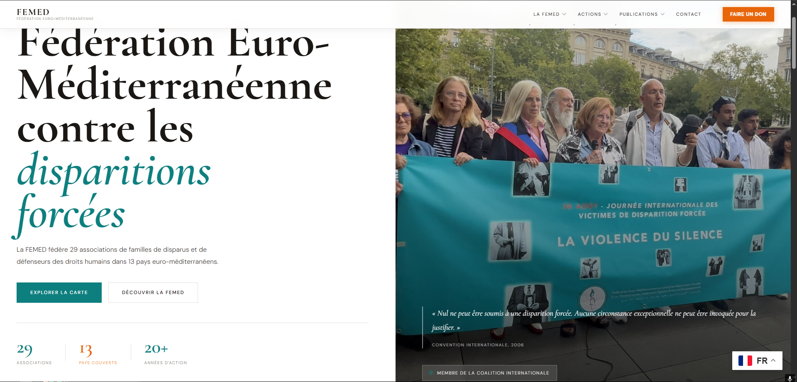
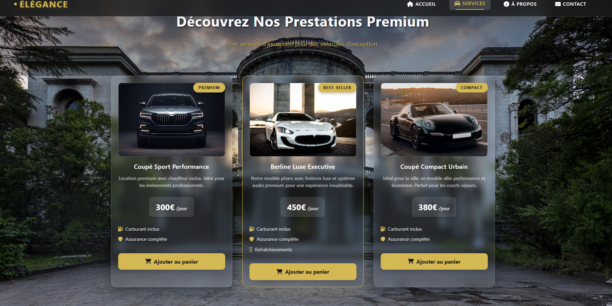
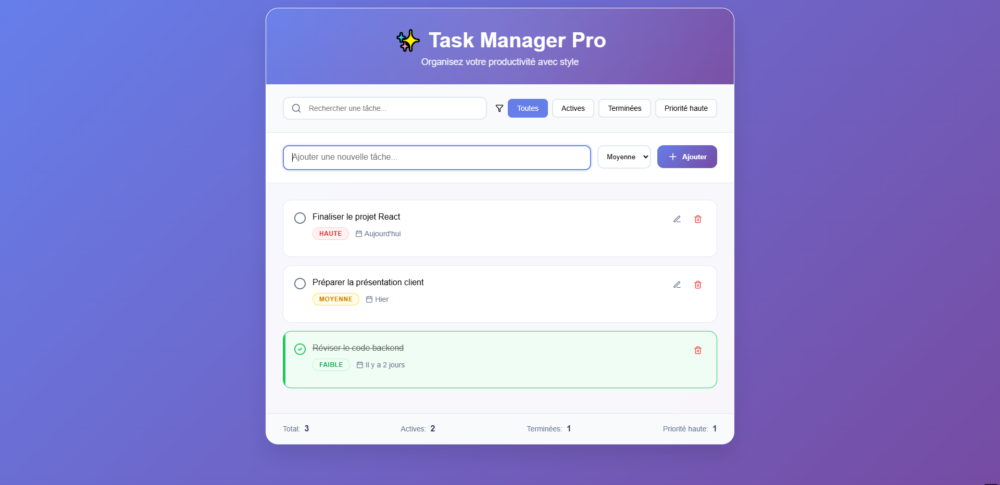
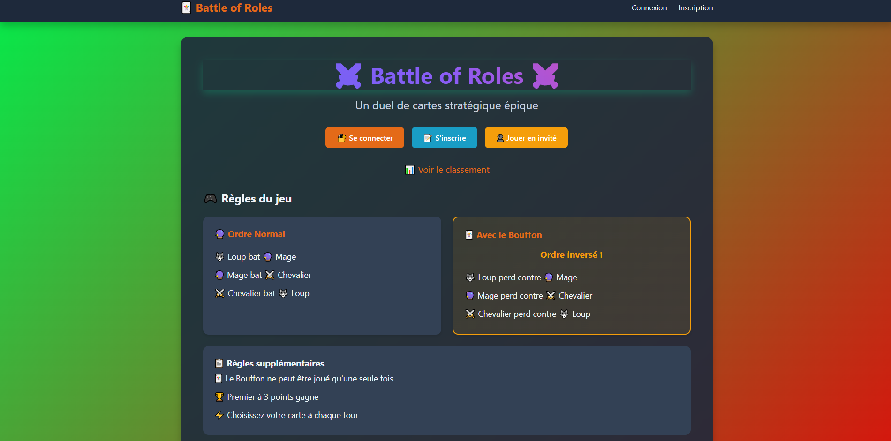

Mes différents Projets

Développement et maintenance d'un thème WordPress entièrement personnalisé pour une ONG internationale présente dans 13 pays. Le site est multilingue (français, arabe, anglais) et couvre l'ensemble des activités de la fédération : publications, rapports, revues, carte interactive, actualités et dons.
Travail réalisé directement dans les fichiers PHP du thème, sans page builder. Parmi les fonctionnalités développées : intégration de PDF.js pour la prévisualisation interactive de documents PDF dans le navigateur, création d'un carousel hero animé, système de lightbox PDF, templates de pages dédiées, archive de publications avec cartes entièrement cliquables, et corrections de bugs divers sur un site en production.
Stack : PHP · WordPress · JavaScript · PDF.js · Polylang · MySQL

Site Vitrine
Simulation de présence en ligne d'une entreprise, responsive et bien structuré.
Voir sur GitHubCe site vitrine a été développé comme un exercice pour simuler la présence en ligne d'une entreprise. Il comprend plusieurs sections classiques (accueil, services, à propos, contact) et vise à montrer ma capacité à concevoir un site professionnel, bien organisé et responsive.
Stack : HTML · CSS · JavaScript

To-Do List
Application React ultra-rapide pour organiser et filtrer ses tâches du quotidien.
Voir sur GitHubApplication web simple et intuitive pour organiser des tâches du quotidien. Avec une interface claire et moderne, possibilité rapide d'ajouter des tâches, leur attribuer une priorité, les marquer comme terminées ou en cours, et même les filtrer ou rechercher en un instant. Le tout propulsé par React et Vite, pour une expérience ultra-rapide et fluide.
Stack : React · Vite · JavaScript

Battle of Roles
Jeu web multijoueur en tour par tour avec leaderboard et carte spéciale Bouffon.
Voir sur GitHubBattle of Roles est un jeu web multijoueur développé en Python avec Flask et une base de données MySQL. Deux joueurs s'affrontent en tour par tour en jouant des cartes représentant trois rôles — Mage, Chevalier et Loup — chacun battant un autre selon un cycle logique. Une carte spéciale, le Bouffon, peut être jouée une seule fois par partie pour inverser les règles.
Le projet intègre un backend Flask (gestion des routes, logique du jeu, sessions, utilisateurs), une base MySQL (stockage des comptes, parties, scores), un frontend HTML/CSS/JS avec animations de cartes. Les joueurs peuvent s'inscrire, se connecter ou jouer en invité, leurs scores étant enregistrés dans un leaderboard global.
Stack : Python · Flask · MySQL · HTML · CSS · JavaScript
...
Voir plus sur GitHub